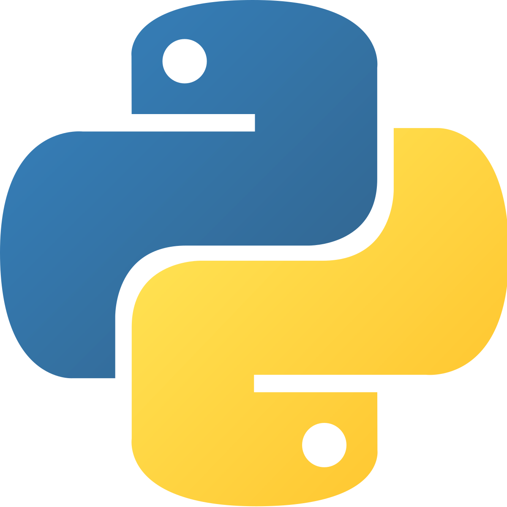

Python

Python är det näst mest populära programmeringsspråket som vi kan se i listan om de populäraste programmeringsspråken på sidan om programmering som du kan läsa om du klickar på länken i den lokala navigeringsmenyn upper till höger. Python är så här populärt för att det är väldigt lätt att förstå och då lätt att lära sig för nybörjare och därför startar många med att programmera med python. Python lanserades 1991 av Guido van Rossum som är en programmerare från nederländerna som föddes 31 januari 1956. Det som utmärker Python är dess rena programkod, t.ex behöver man inte avsluta rader med semikolon.
Populära spel gjorda i python:
- Flappy Bird:
- Fågel som ska försöka flyga genom rör utan att nudda dem.
- The Sims 4:
- Spelaren bestämmer vad "simmarna" i simulationen ska göra.
- World of Tanks:
- Multiplayer-spel där spelarna krigar mot varandra i pansarvagnar.